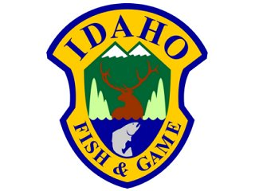

INTRODUCTION: Welcome to the Help Doc for the Hunt Planner Map Center!
The IDFG Hunt Planner Map Center application allows you to explore Idaho's hunting opportunities. To summarize the power of this application, it allows you to:
DISCLAIMER: Idaho Department of Fish and Game does not assume liability. No warranty expressed or implied by Idaho Department of Fish and Game regarding the utility of the data on any other system, nor shall the act of distribution constitute any such warranty. The data represented in this file is true and accurate to the best of Idaho Department of Fish and Game's knowledge but is considered a best representation only. Users must assume responsibility in determining the usability of this data for their purposes.
A number of layers available in the Turn Layers On/Off window are created and maintained by other agencies. For more information about a specific layer, go to the Turn Layers On/Off section. For any questions regarding the GIS data or to report any errors please contact us.
ENJOY!

Created with the Personal Edition of HelpNDoc: iPhone web sites made easy